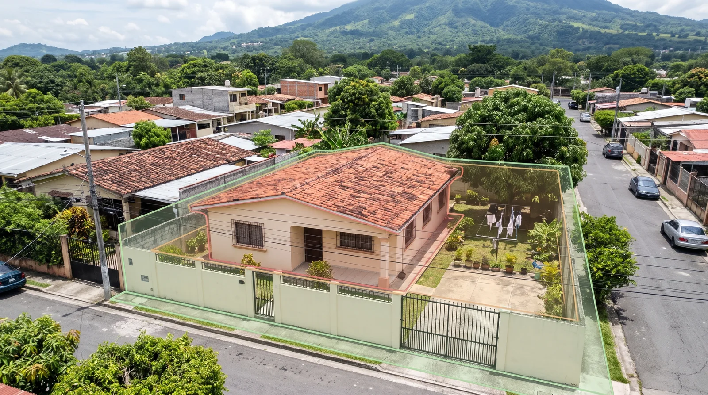
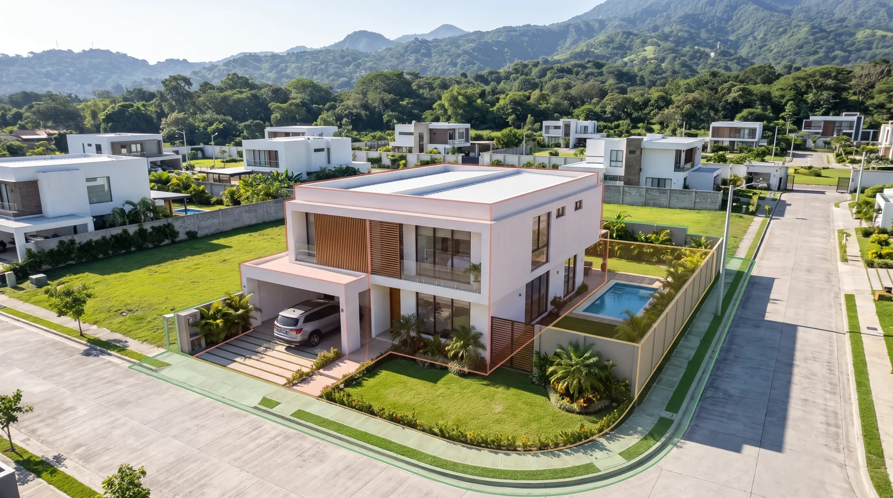
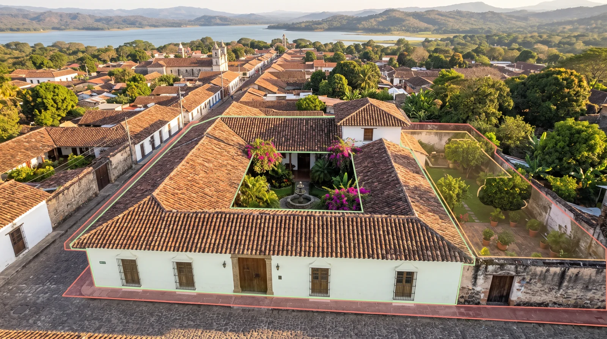
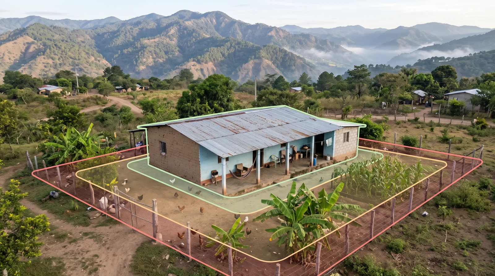
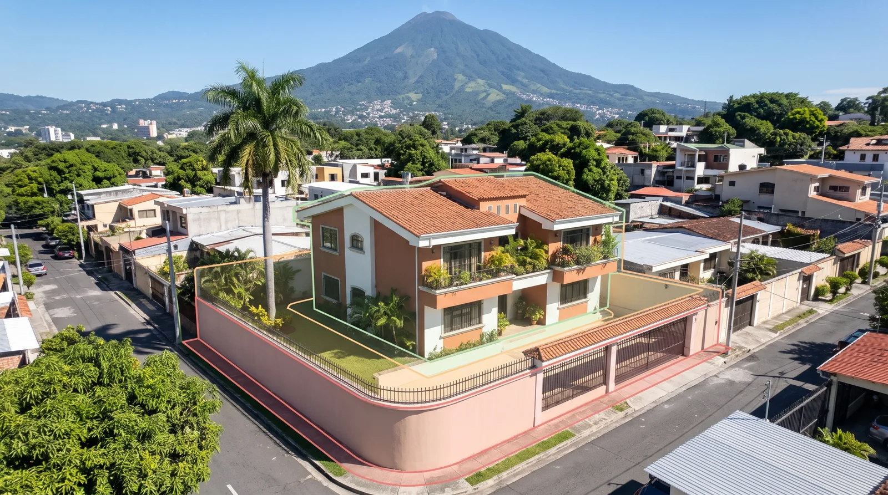
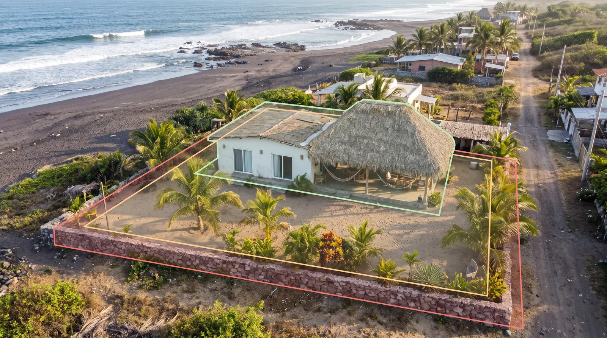
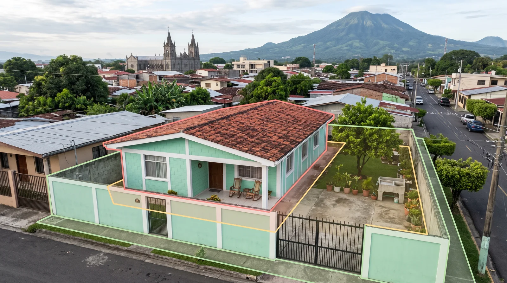
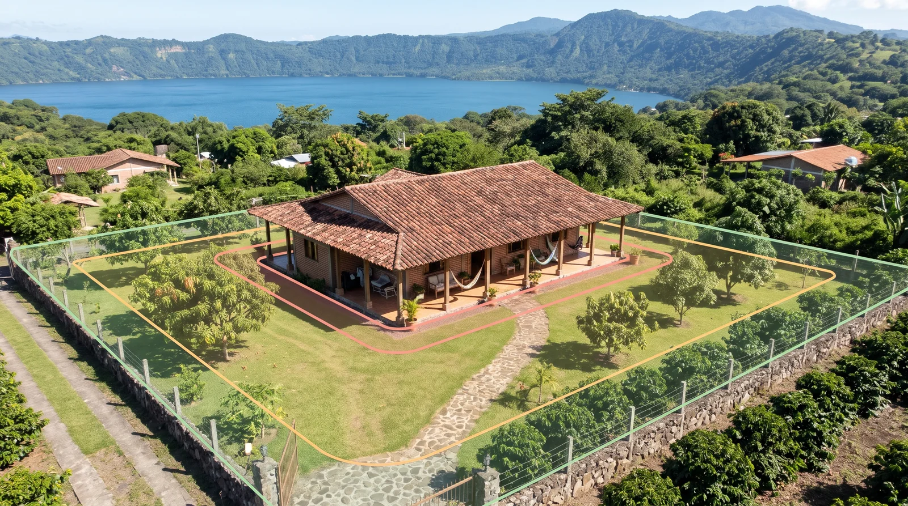

Segunda tanda para la sección «¿Dónde revisamos?»: fotos de dron con luz de día, casas como las que se ven en El Salvador y las zonas marcadas con líneas finas, sin brillo ni neón. Diga qué número prefiere.
En la casa elegida se dejan los colores igual que la leyenda de la página: rojo pegado a la casa (interior), amarillo en el patio (perímetro) y verde en el límite del terreno (patio y jardín). Las opciones 7 y 8 ya vienen así.







